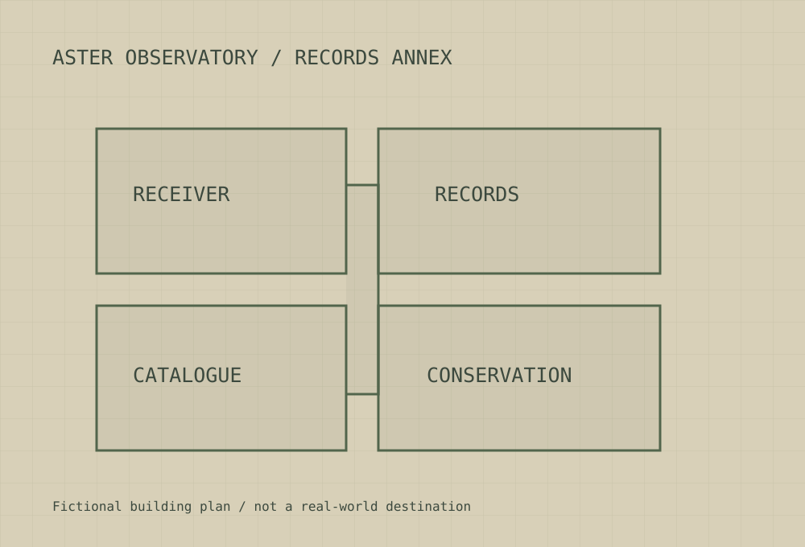

SHELF 1441
Retained working materials
A receiver tape, a substitution note marked III, two historical reference cards, and fragments of a memorandum.
The small grid restores the shelf number. Bring its diagonal back to the conservation desk.
TEMPORAL RECORDS AND ARCHIVE CORRELATION EXPERIMENT
The surviving index names three collections and eight reports. The unexplained reference IX was preserved in the conservation copy.
SHELF 1441
A receiver tape, a substitution note marked III, two historical reference cards, and fragments of a memorandum.
The small grid restores the shelf number. Bring its diagonal back to the conservation desk.
RECEIPT HISTORY
Mara Voss requested that the original receiver log and editorial correspondence be retained under IX. A typed copy was made later.
Read Voss’s custody note
Aster records annex / fictional game diagram. There is no physical location to visit.
Earlier publicity treated correlations as predictions. The conservation edition retains both the publicity claim and the objections to its chronology.
Solve and verify the record at the investigation hub. This site is a readable archive surface, not a login or a live system.